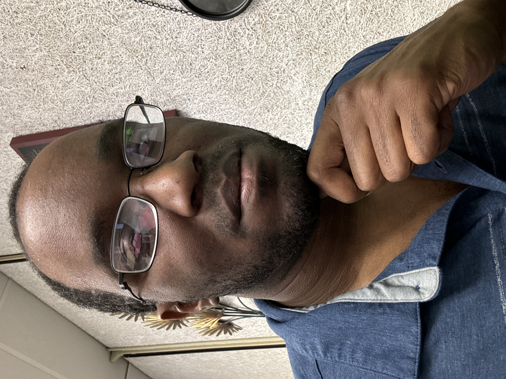

The Road to Animation
Hello, my name is Christerfer James, and I am seeking a degree in Game Art and Animation. The following designs are my most recent work and my first attempts. I would like to gain as much experience as possible to one day develop and publish my very own game or animation series. I am also working in Adobe illustrator and Photoshop to improve my understanding of all aspects of the industry. It’s a far-off goal and I know it will not be an easy one to accomplish but I’m willing to put in the effort.

Hello, my name is Christerfer James, and I am seeking a degree in Game Art and Animation. The following designs are my most recent work and my first attempts. I would like to gain as much experience as possible to one day develop and publish my very own game or animation series. I am also working in Adobe illustrator and Photoshop to improve my understanding of all aspects of the industry. It’s a far-off goal and I know it will not be an easy one to accomplish but I’m willing to put in the effort.